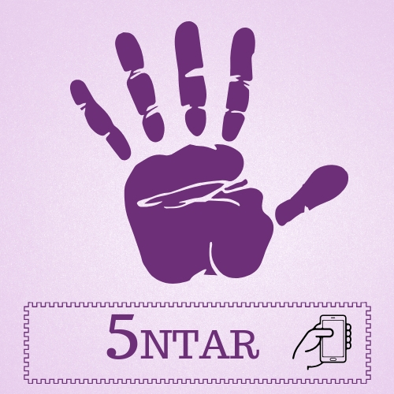

5ntar.
Denunciá el acoso callejero.
5 clicks para contar lo que no se cuenta.
En nuestra versión web también podemos brindarte información sobre centros de ayuda o leyes sobre el acoso.
Denunciá el acoso callejero.
5 clicks para contar lo que no se cuenta.
En nuestra versión web también podemos brindarte información sobre centros de ayuda o leyes sobre el acoso.